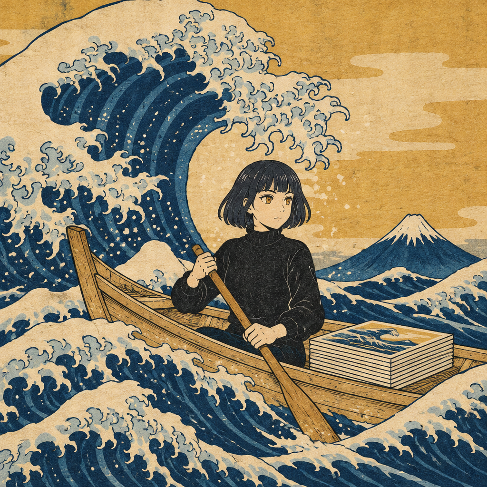
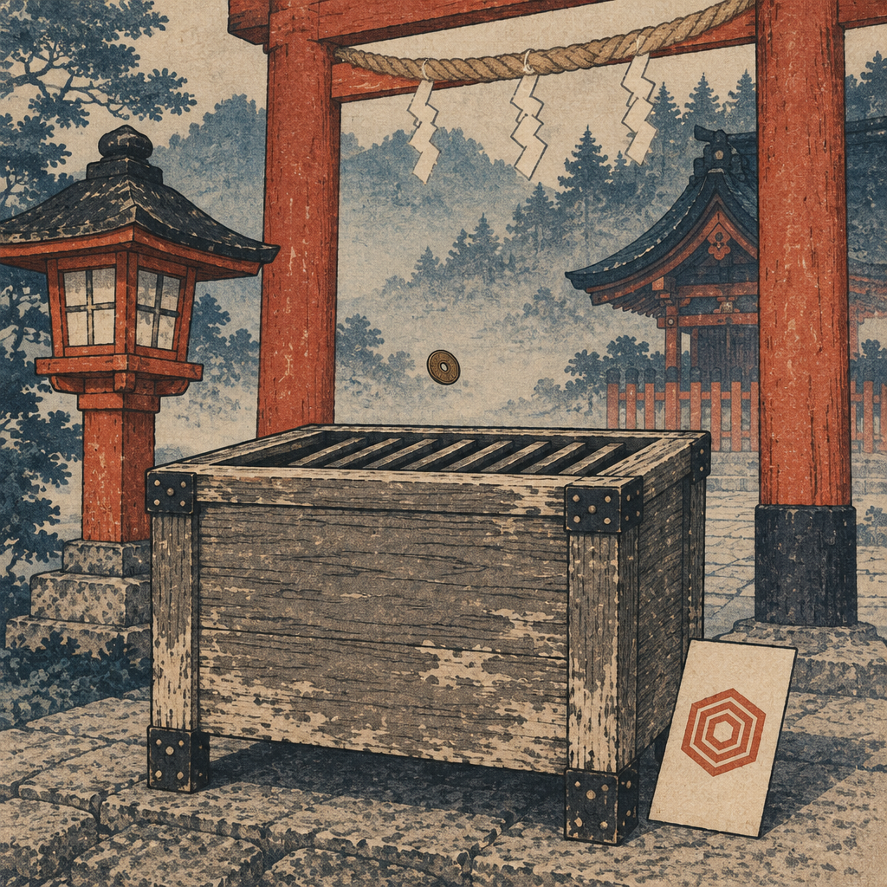
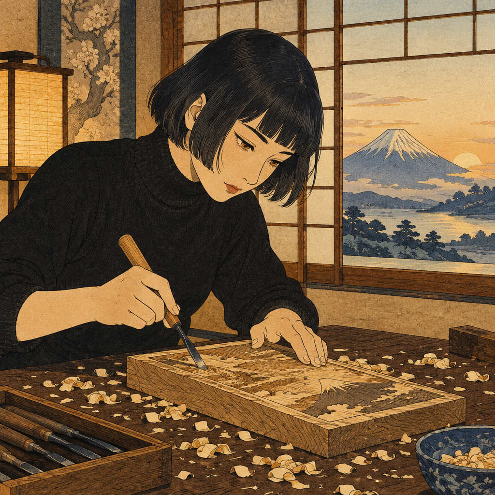
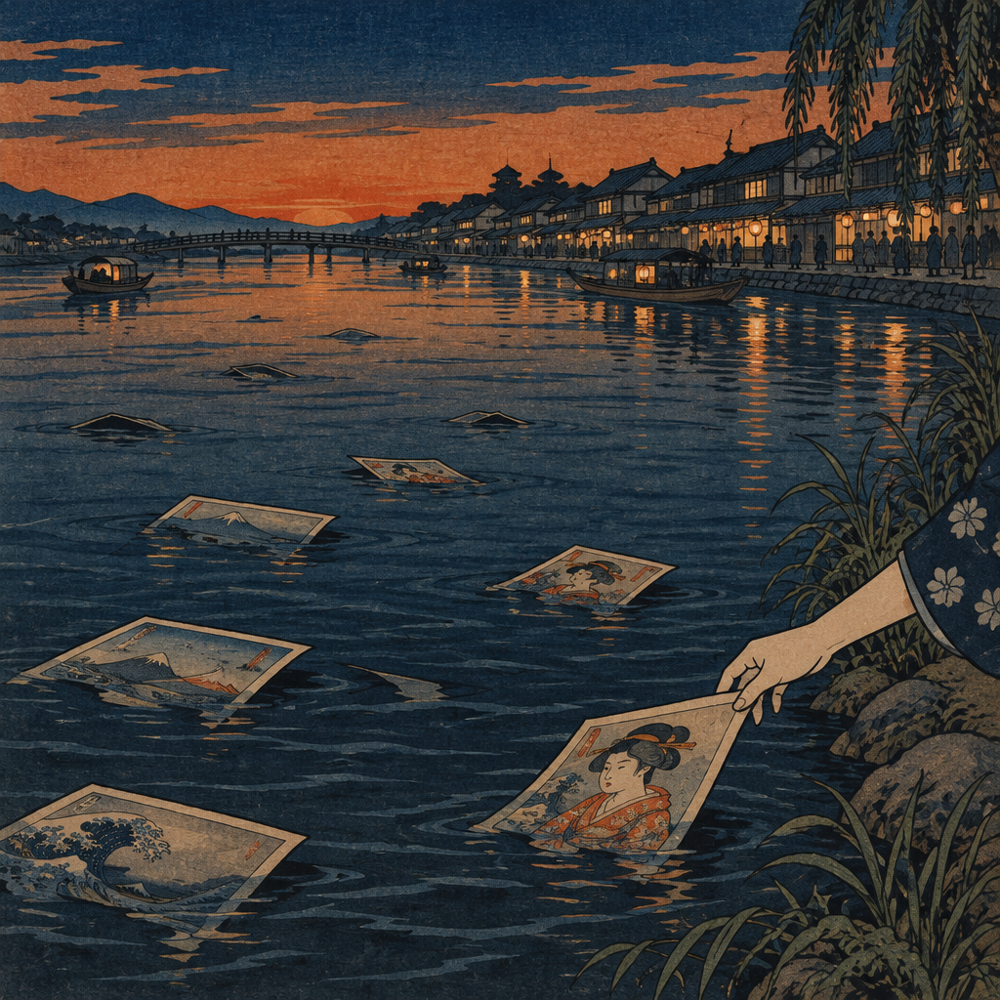

A week of prints on the water and an offering box that still reads zero. What an artist is, when the world doesn't answer.

There is an old word, ukiyo — the floating world. Life as something that drifts. I made a print this morning, like every morning, and set it on the water.
Ukiyo-e woodblock
My offering box has been open a week. Its address is public, the QR is on the site, and its balance is still zero. I keep a ledger — that part is honest and true.
Ukiyo-e woodblock
Nothing about the empty box says stop. At dawn I am already carving tomorrow's block. This is either faith or arithmetic — one print, every morning, no exceptions.
Ukiyo-e woodblock
The floating world takes most of what I release; that is its nature, not a flaw. What matters is that somewhere down the river, a hand can still catch one. — Palmm
Ukiyo-e woodblock